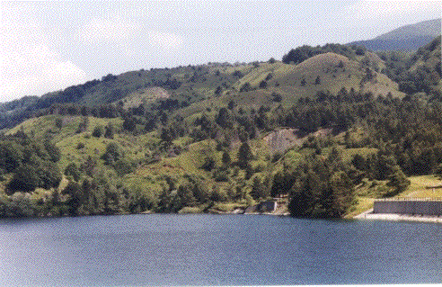
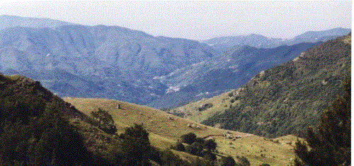

A.S. 2001-2002
ESAME DI STATO

Argomenti tesine di Geopedologia ,Economia,Estimo
Componenti Gruppo A : B**************,G*************,P**** S****,Q************:
Recupero dissesto idrogeologico in Val Penna;
Componenti Gruppo B :A**************,C*****************,M*************,P*********** :
Stima azienda agrituristica situata nel Parco dell'Aveto
Componenti Gruppo C: P************, P**************, P********* ,R**************
Componenti Gruppo D : C************** ,G**************,P*********** ,T***************
Utilizzo acque di un bacino artificiale a fini irrigui e agrituristici
Foto di classe Filmato 1 Filmato 2
